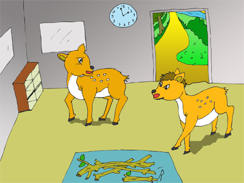
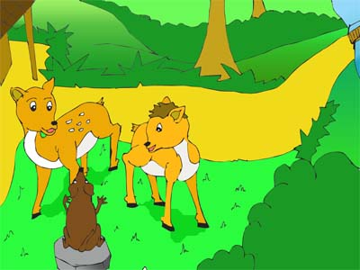
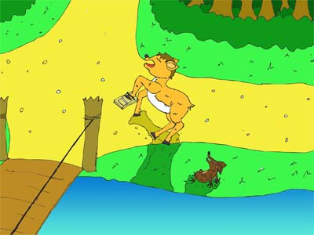

Kancil dan Tikus
Di sebuah hutan hiduplah dua ekor kancil. Mereka bernama Kanca dan Manggut. Kedua ekor kancil itu bersaudara. Manggut adalah kakak dari Kanca. Sebaliknya, Kanca adalah adik dari Manggut. Walaupun mereka bersaudara, tetapi sifat mereka sangatlah berbeda. Kanca rajin dan baik hati. Sedangkan Manggut pemalas dan suka menjahili teman..

Suatu hari Manggut kelaparan. Tetapi Manggut malas mencari makan. Akhirnya Manggut mencuri makanan Kanca. Waktu Kanca menanyai kepada Manggut di mana makanannya,
Manggut menjawab dicuri tikus.
"Ah, mana mungkin dimakan tikus!" kata Kanca.
"Iya, kok! Masa sama kakaknya tidak percaya!" jawab Manggut berbohong.
Mulanya Kanca tidak percaya dengan omongan Manggut. Tetapi setelah Manggut
mengatakannya berkali-kali akhirnya Kanca percaya juga. .

Kanca memanggil tikus ke Rumahnya.
"Tikus, apakah kamu mencuri makananku?" tanya Kanca pada tikus.
"Ha? Mencuri? Berpikir saja aku belum pernah!" jawab tikus.
"Ah, si tikus! Kamu ini membela diri saja! Sudah, Kanca! Dia pasti berbohong," kata
Manggut.
"Ya, sudahlah! Tikus, sebagai gantinya ambilkan makanan di seberang sungai sana. Tadi
aku juga mengambil makanan dari sana, kok!" kata Kanca mengakhiri percakapan.
Tikus berjalan ke tepi sungai. Ia menaiki perahu kecil untuk
menuju seberang sungai.

Sebenarnya tikus tahu kalau Manggut yang mencuri makanan. Sementara itu, di bagian sungai yang lain, Manggut cepat-cepat menyeberangi sungai. Ia hendak memasang perangkap tikus agar tikus terperangkap. Ketika tikus hampir mendekati seberang sungai, tikus melihat perangkap. Tikus yakin kalau perangkap itu dipasang oleh Manggut. Tiba-tiba tikus mendapat ide. Tikus berpura-pura tenggelam dalam sungai.

"Aaa... Manggut, tolong aku...!" teriak tikus. Mendengar itu Manggut segera menolong tikus. Tikus meminta Manggut mengantarkannya ke seberang sungai. Manggut tidak bisa berbuat apa-apa. Ia mengantarkan tikus ke seberang sungai. Sesampai di seberang sungai tikus meminta Manggut menemani tikus mengambil makanan. Karena Manggut tidak hati-hati, kakinya terperangkap dalam perangkap tikus.
Dan akhirnya Manggut menyesali perbuatan buruknya dan berjanji tidak akan mengulanginya lagi.
Pesan Moral "Perbuatan buruk pasti akan ketahuan juga walaupun disembunyikan".